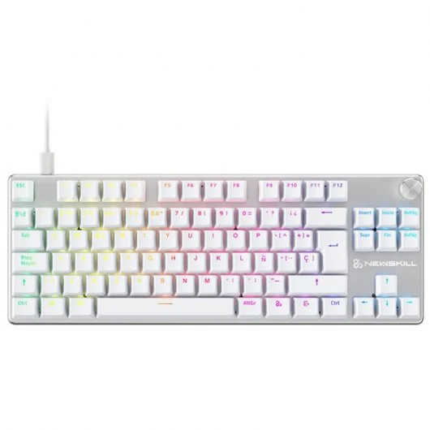

Newskill Serike V2 TKL Teclado Gaming Mecánico RGB Blanco NewSwitch Red

Cod. Artículo: 10790439
Teclas retroiluminadas RGB.
89€
Comprar ahora  Envío: Gratis | Devolución: Gratis
Envío: Gratis | Devolución: Gratis
 Ver disponibilidad en tienda
Ver disponibilidad en tienda
Sobre el producto:
El teclado mecánico para juegos Serike V2 te ofrece la experiencia más completa para jugar. Formato de tamaño TKL, switches intercambiables, software dedicado y rueda de volumen dedicada, todo esto con más y mejores funcionalidades e incluye los nuevos switches personalizados NewSwitch.
Especificaciones:
- Chasis Acabado en aluminio.
- Iluminación RGB configurable desde teclado y software.
- Conexión USB tipo A, extraible.
- Frecuencia de actualización 1.000Hz.
- Altura Ajustable 2 posiciones.
- Teclas Multimedia Rueda de volumen.
- Distribución Español (QWERTY/ISO) con tecla Ñ.
- Dimensiones del producto 12,6 x 35,5 x 3,2 cm (LxAxAl).
- Peso aprox. 0,98 Kg.